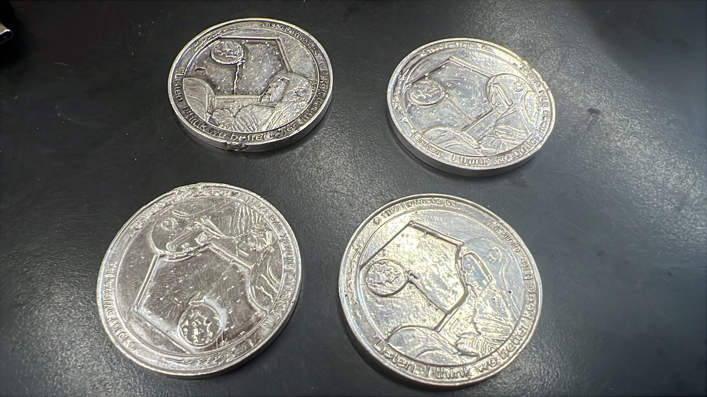
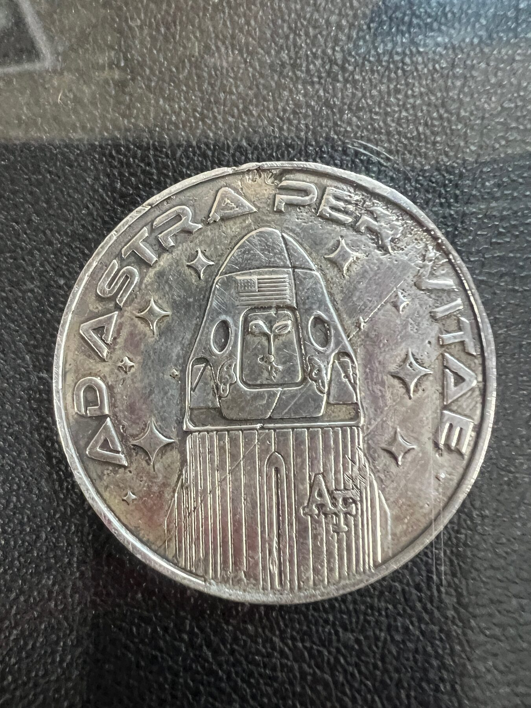
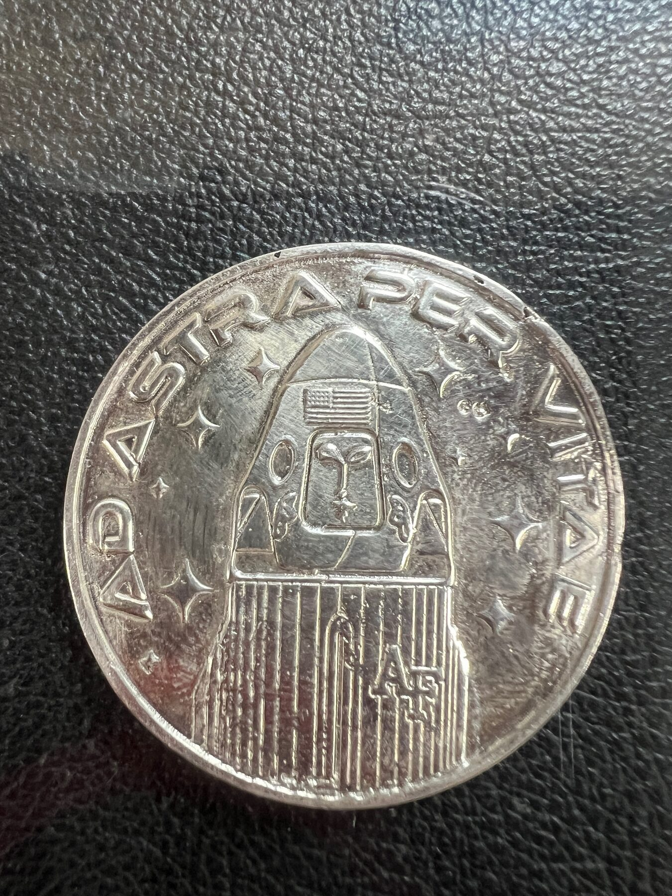
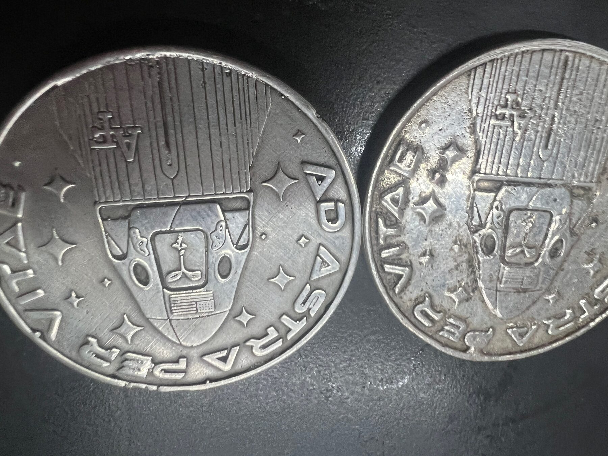
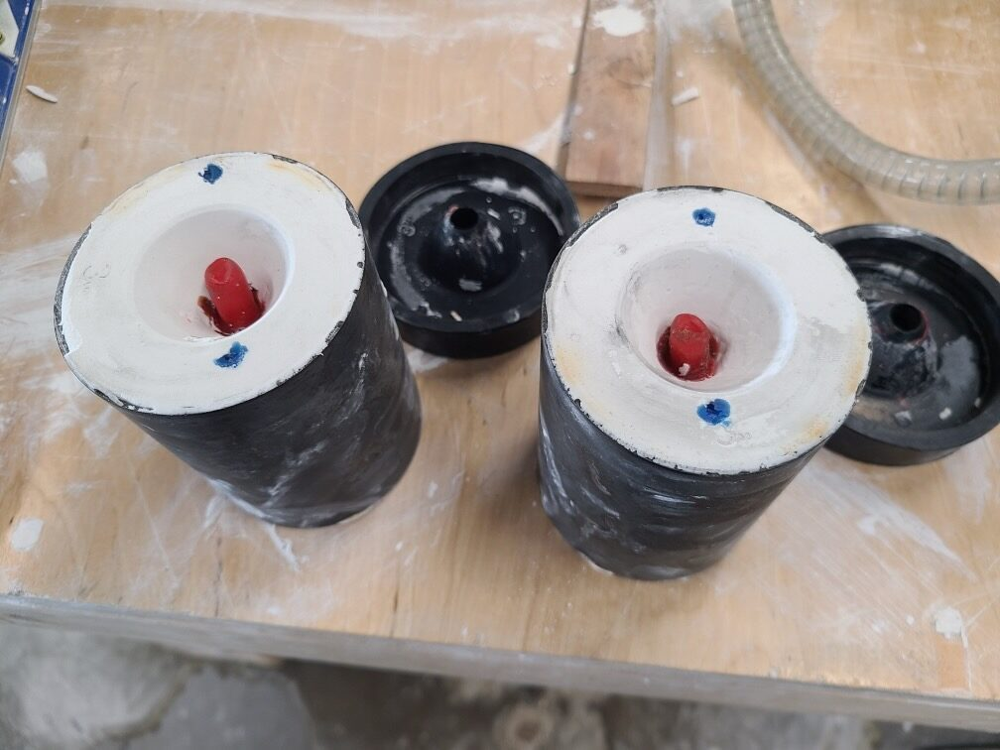
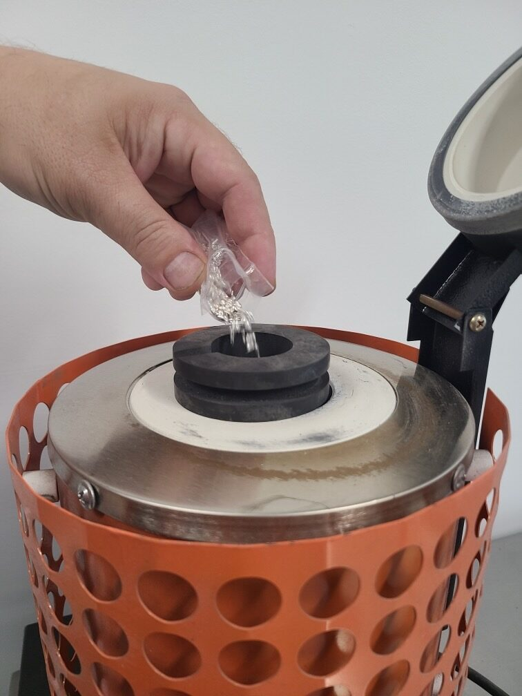

Objects / 2026
Far Side ISS Coin
Small-edition silver coin for a Space Force mission
A small-edition hand-cast .999 silver coin that translated a Gary Larson tribute from two-dimensional cartoon language into relief, mold work, and lost-wax casting.
The Far Side ISS Coin began as an unusually specific recognition object: a small run of silver coins connected to a Space Force research mission carrying tribute material to the International Space Station.
ChiLab translated the two-dimensional cartoon reference into a legible relief model at coin scale, then moved the design through 3D printing, mold preparation, investment, and casting in .999 silver.
At roughly an inch and a half across, the project compressed digital modeling, hand casting, finishing, and copyright-sensitive cultural material into a tiny object with an outsized story.
Details
- Year
2026 - Location
Chicago, IL / International Space Station - Category
Objects - Materials
.999 silver, castable resin, investment mold, lost-wax casting
Credits
- Client: U.S. Air Force Academy / Space Force mission team
- Mission lead: Major Travis Tubbs
- Original artwork: Gary Larson / FarWorks, Inc.
Download
Index






